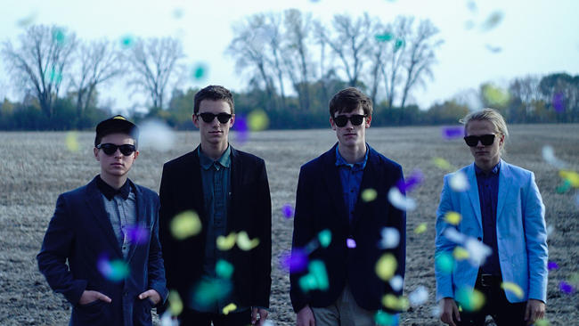

History
Formation (2013)
Hippo Campus includes Jake Luppen (vocals/guitar), Nathan Stocker (guitar/vocals), Zach Sutton (bass), and Whistler Allen (drums/vocals). On the streets they are commonly known as Turntan, Stitches, Espo, and Beans. The band met at the Saint Paul Conservatory for Performing Artists where they all attended high school and many of Hippo Campus's members played in other bands (Blatant Youth/Whistle Kid; Danger, Will Robinson/Northern) before uniting under the Hippo Campus banner.

Bashful Creatures and South EPs (2014-present)
On Nov 18, 2014, Hippo Campus independently released their first EP titled, Bashful Creatures.[1] They later signed with Grand Jury records, and re-releasedBashful Creatures under their new label on Feb 24, 2015. The EP received airplay on local radio station The Current for the singles "Little Grace" and "Suicide Saturday". Hippo Campus have also done live sessions with WFUV, KCRW and KEXP. On December 26, 2015 they appeared on the nationally broadcast "CBS This Morning Saturday" broadcast on the CBS Television Network.
In October, 2015, Hippo Campus released their sophomore EP, 'South'. South embodies a progressive, colorful sound with energetic guitar riffs and up-beat vocal melodies. 'South' came in at #15 on the Heatseakers Chart and #96 on the Current Digital Chart on Soundscan.
A full-length album might be coming in late 2016 or early 2017.

Headlining Tours
•Fall Tour (2015)
•November Tour (2015)
•Spring Tour (2016)
•June Tour (2016)